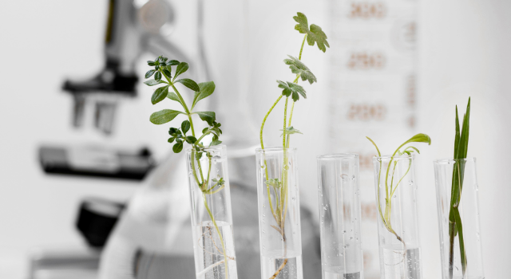
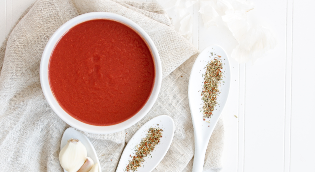

세스코경쟁력
41년간 업계의 리더 세스코
노하우와 첨단 기술력으로 바이러스로부터 안전한 생활환경을 만들어드립니다.
-
세스코 R&D 시스템 세계 최대 규모 위생해충기술연구소 보유하고 있으며, 5,016만 해충 인프라 및 세스코 식품안전연구소 3,957여가지 식품안전관리 시스템 구축 및 관리합니다.
-
통합커뮤니케이션 센터 서버를 통한 전국 40만 고객의 위생서비스 이력 빅데이터 관리하고, 위생 정보 빅데이터를 통한 해충위생, 식품안전, 공기질 분석 및 최적의 솔루션 도출합니다.
-
환경위생 컨설턴트 매년 생물학·화학·IT공학 분야 전문성 습득을을 위한 의무교육 시스템으로 엄격한 이론/현장 실습과정을 통해 전문가 자격을 취득하는 CESCO FSL을 운영합니다.
글로벌 NO.1
생활환경 위생기업
40년간 업계 리더로서 지켜온 대한민국 환경위생의 역사 세스코입니다.
-
PROFESSIONALIST대한민국 방제산업의 첨단환경위생기업으로 도약
-
SERVICE지역본부 100개 직영 지사의 균일한 서비스 네트워크
-
SOLUTION최고 기술연구소 200여 명의 석·박사 맞춤방제 솔루션
-

SATISFACTION유지 의향 97% 기관, 가정집 등 전국 40만 멤버스 고객
강력한 R&B
강력한 R&B로 고객맞춤형 생활 환경 위생 솔루션 개발합니다.
CESCO 위생해충기술연구소
CESCO SCIENCE
CESO R&D CENTER 위생해충 기술연구소
-
위생해충 기술연구소세계 최대 규모의 해충 기술연구소로 2,193가지 해충 방제시스템 보유
-
이물분석 센터국내 유일의 제품 혼입이물 분석기관으로, 제품 내 혼입된 이물의 실체 파악
-
CBT 센터세계 최대 규모의 BIOTECH 약제생산 시스템으로 안전한 친환경제 사용
세계 최고 수준의 연구개발
시스템 위생해충 기술연구소
주요 5개분야 연구에서 현재 약 100건의 특허를 보유하고 있습니다.
인증국제적 공신력을
갖춘인증으로믿음직한 서비스
KOLAS인증을 통해 국제적으로 안정된 시험품질 경영 시스템을 보유하고 있는 것으로 입증되었습니다.
식품안전연구소
CESCO SCIENCE
CESO R&D CENTER 식품안전연구소
-
식품안전연구소식품위해요소 1,000여가지 3,597여가지 식품안전 관리 기준 보유
-

시험분석센터16종의 식품 미생물 분석 · 동정 환경 모티터링 검사 및 이력 관리
고객의 위생 안심을
책임지는식품안전연구소
전국 80개 직영지사 300면의 식품안전전문가 보유로 철저하게 전국 위생이슈 모니터링을 하고 있습니다.
식품안전 전문가의 객관적인
진단과 점검으로식품안전 약속
식품안전연구소에서 정기교육을 통해 업종별, 고객별 1:1 맞춤 식품안전 서비스를 제공합니다.